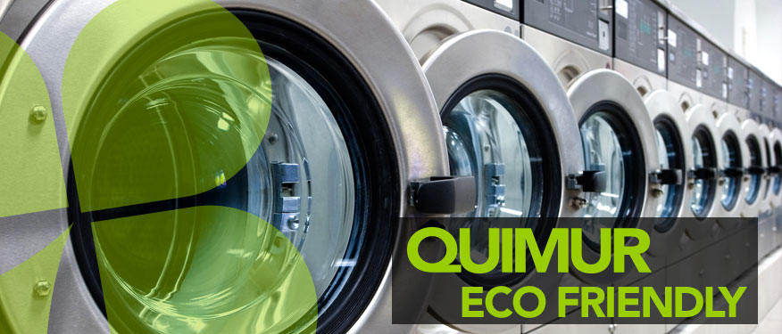

Lavanderías
Industriales, Institucionales & Comerciales

PRODUCTOS BÍO-DEGRADABLES DE ALTA CALIDAD Y EFICIENCIA
Los nuevos desarrollos en el campo de los detergentes, de las nuevas mezclas de fibras sintéticas y de los acabados textiles, así como el mejoramiento en las técnicas de lavandería nos obligan a que estemos más familiarizados con los principios fundamentales y aplicaciones de la Química de la lavandería. Conociendo más a fondo la tecnología de la industria, podremos asesorar a nuestros clientes y hacer posible que obtengan una producción consistente y de mejor calidad, con una economía conjunta en sus operaciones. Esto lo lograremos con el conocimiento de las fibras textiles y de los efectos que sufren con los jabones, detergentes sintéticos, alcalinos, blanqueadores, neutralizantes y otros productos para las lavanderías, así también debemos conocer y estar familiarizados con la función de los agentes químicos utilizados en el proceso de lavado y con las condiciones requeridas para alcanzar el mayor rendimiento y calidad del equipo y facilidades energéticas que encontremos en cada planta; deberemos de conocer también la parte que tienen los jabones, detergentes sintéticos y ablandadores en la remoción de suciedad, la función y efecto de los blanqueadores.
En la remoción de manchas y las razones de una apropiada neutralización en relación con la conservación de la tela y de una buena calidad en el planchado. Deberemos de entender también el efecto de otros factores tales como la temperatura, los niveles de agua y la duración de las operaciones, que tienen sobre los resultados finales de lavado.
Complementando todo lo anterior, deberemos de llevar a cabo las pruebas químicas necesarias para establecer un control Químico satisfactorio. Capacitaremos al personal de su empresa para medir la dureza de agua, la concentración de blanqueadores, la determinación de sus residuos tanto en aguas de enjuague como en las telas, así como la determinación de pH y concentraciones (titulaciones) en las diferentes operaciones de lavado.
QUIMUR pone a su disposición una gran variedad de productos químicos de alta calidad y eficiencia comprobada cumpliendo las normas ecológicas para la limpieza y mantenimiento de la industria de lavanderías.
Los productos se han ajustado y perfeccionado por las exigencias actuales y por los avances tecnológicos; hoy en día somos capaces de ofrecer: "UNA NUEVA LÍNEA DE PRODUCTOS BÍO-DEGRADABLES DE ALTA CALIDAD Y EFICIENCIA"
Después de haber comprobado la nobleza de toda la línea de nuestros productos en miles de toneladas de ropa, realmente limpia, por el afán incansable de servirles con los mejores productos y con lo mejor de nosotros mismos.
Permítanos poner a su disposición a nuestro experimentado equipo técnico que le auxiliará, en forma integral, para resolver los problemas de limpieza e higiene en: hoteles, hospitales, clínicas, lavanderías institucionales, comerciales e industriales.
QUIMUR conoce perfectamente la industria y sus necesidades por lo que ha establecido que su personal técnico, auxiliado con un laboratorio portátil, aunado a sus conocimientos y experiencia, le indiquen la forma de reducir costos, optimizar operaciones y aumentar la producción a través de un minucioso análisis de su planta, maquinaria, tipo de ropa, agua y tipos de suciedad.
LOS PRODUCTOS PARA LAVANDERÍAS SON:
-
- • Detergentes
- • Reforzadores Alcalinos
- • Saneadores
- • Abrillantadores
- • Suavizantes
-
- • Acondicionadores de Agua
- • Blanqueadores
- • Desmanchadores
- • Emulsificantes
- • Neutralizantes